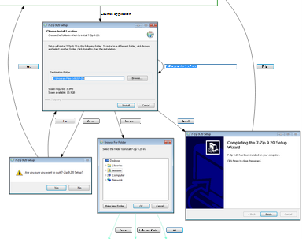

Murphy, a set of tools for automation.

Some of the things that can be done with can be found here.
Why?
How?
Things you should know...
Installation & running the samples
Creating your first model extraction scripts
Quick references
More to come...
References on the web
A paper related to murphy was presented in EESSMod 2013 - Experiences and Empirical Studies in Software Modeling at http://ceur-ws.org/Vol-1078/, a direct
link to the paper is here
Internal workshop of Ericsson in Stockholm, 2013 (sorry, no online material available at the moment)
Anoter presentation related to murphy was submitted to ISSTA 2014
There's no official support, we may have support forums in the future if there's enough interest, in the meaintime (and I make no promises) you can try reach me at valkoinen.rapu at gmail.com.
Some basic info I've written can be found in this blog
Thanks to
Everybody who made this possible including the vncdotool guys and Pekka Aho et al (who kindly published papers about the experiences of Murphy in F-Secure)